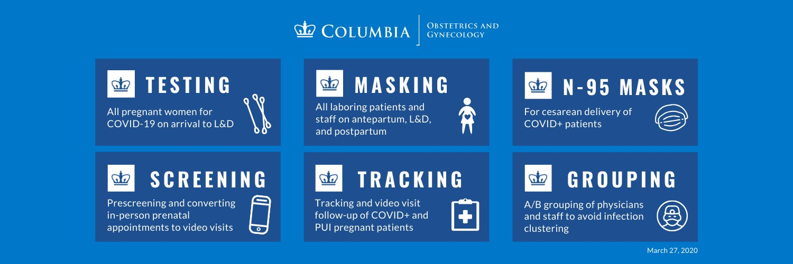

Information for patients planning to deliver at NY Presbyterian.
On the website below, you can learn how to schedule video visits to connect with a doctor. Outpatient offices remain open. https://www.columbiaobgyn.org/news/coronavirus-covid-19-and-pregnancy-q-columbia-ob-gyn-physicians
The information below (and more) is available at: https://www.columbiaobgyn.org/news/coronavirus-covid-19-and-pregnancy-q-columbia-ob-gyn-physicians
There is only limited information on the effects of COVID-19 on pregnant women and their babies due to a small number of cases. Pregnant women experience changes in their bodies that may increase their risk of some viral infections, but it’s not known where COVID-19 is among them.
At this time, there is no data to suggest increased risk of congenital malformations in pregnant women who get COVID-19. There are some reports of increased risk of premature deliveries, but this appears to be due to increased need for emergency premature deliveries to assist maternal treatment, and not due to increased risk of preterm labor.
Información para pacientes que planean dar a luz en el Hospital Presbiteriano.
En el siguiente página electrónica, puede encontrar información sobre cómo programar visitas médicas por video. Las clínicas ambulatorias permanecen abiertas.
https://www.columbiaobgyn.org/news/coronavirus-covid-19-and-pregnancy-q-columbia-ob-gyn-physicians
Hay información limitada sobre los efectos de COVID-19 en mujeres embarazadas y sus bebés debido a la existencia de un pequeño número de casos. Las mujeres embarazadas experimentan cambios en sus cuerpos que pueden aumentar el riesgo a adquirir algunas infecciones virales, pero no se sabe si el COVID-19 es parte de ellas.
En este momento, no hay datos que sugieran un mayor riesgo de malformaciones congénitas en mujeres embarazadas contagiadas de COVID-19. Hay algunos informes que sugieren un mayor riesgo de partos prematuros, pero esto parece deberse a la necesidad de partos prematuros de emergencia para ayudar a la madre y no debido a un mayor riesgo de parto premature per se.
CDC website for Pregnant and Breastfeeding Women re: COVID-19:
[Página electrónica CDC (Centro para el Control y la Prevención de Enfermedades) para mujeres embarazadas y lactantes: COVID-19:]
March of Dimes: https://www.marchofdimes.org/complications/coronavirus-disease-covid-19-what-you-need-to-know.aspx